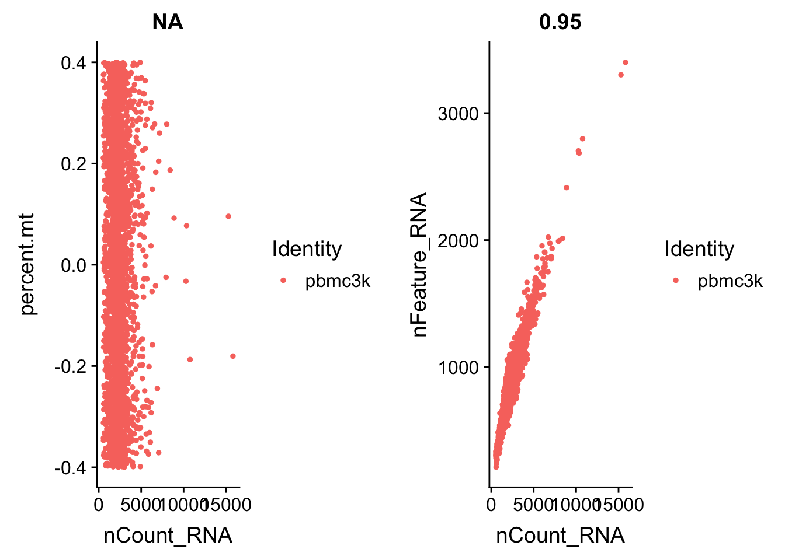
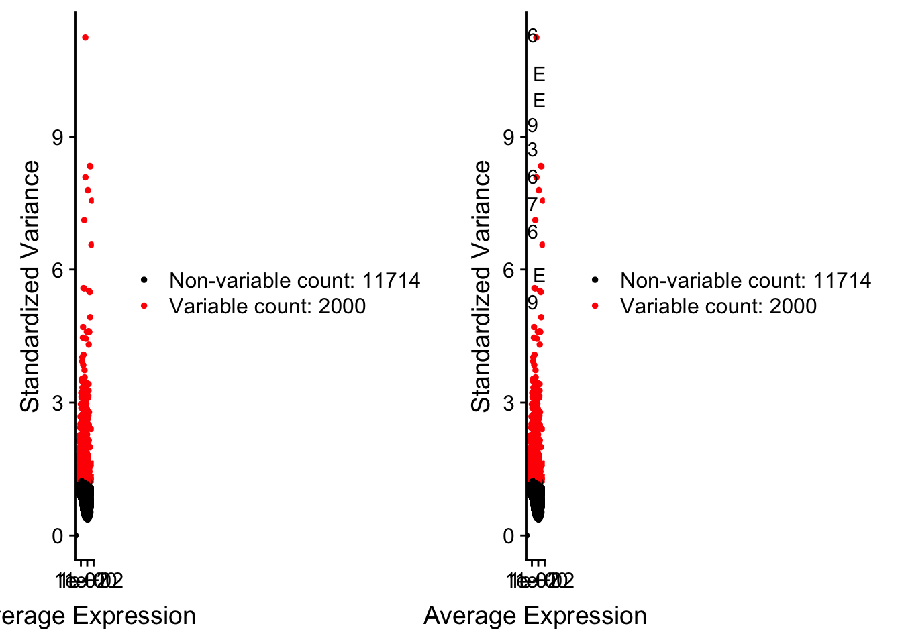
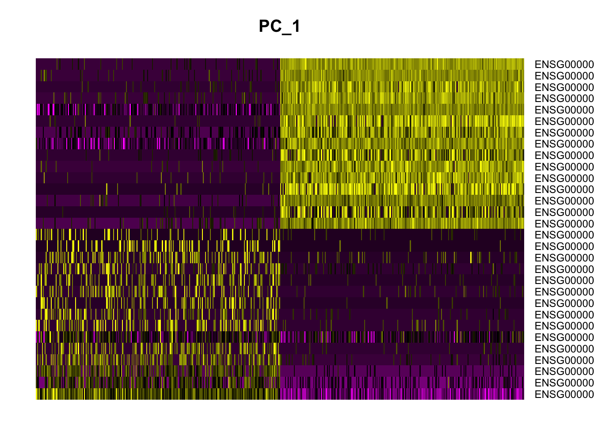
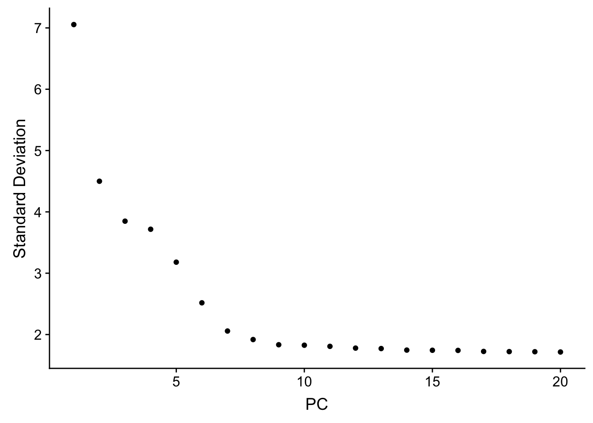
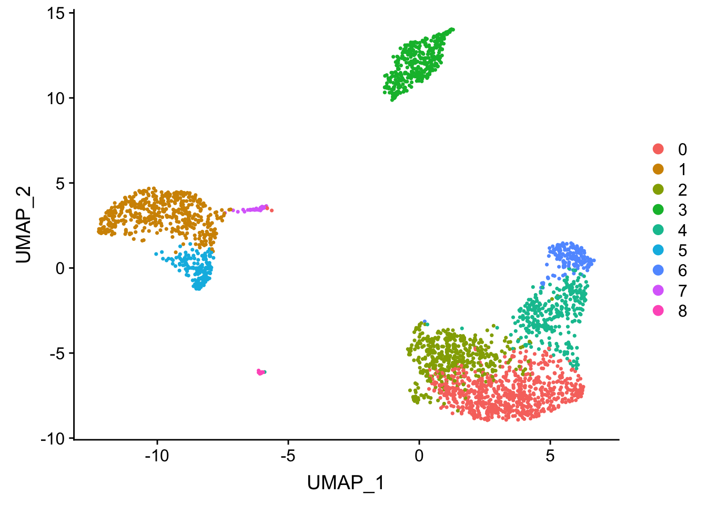

Seurat PBMC 3k tutorial using TENxPBMCData
Kevin Rue-Albrecht
4 July 2019
Overview
In this example, we use count data for 2,700 peripheral blood mononuclear cells (PBMC) obtained using the 10X Genomics platform, and process it following the Guided Clustering Tutorial of the Seurat package.
Getting the data
First, fetch the data as a SingleCellExperiment object using the TENxPBMCData package. The first time that the following code chunk is run, users should expect it to take additional time as it downloads data from the web and caches it on their local machine; subsequent evaluations of the same code chunk should only take a few seconds as the data set is then loaded from the local cache.
library(TENxPBMCData)
tenx_pbmc3k <- TENxPBMCData(dataset="pbmc3k")
colnames(tenx_pbmc3k) <- paste0("Cell", seq_len(ncol(tenx_pbmc3k)))
tenx_pbmc3k## class: SingleCellExperiment
## dim: 32738 2700
## metadata(0):
## assays(1): counts
## rownames(32738): ENSG00000243485 ENSG00000237613 ...
## ENSG00000215616 ENSG00000215611
## rowData names(3): ENSEMBL_ID Symbol_TENx Symbol
## colnames(2700): Cell1 Cell2 ... Cell2699 Cell2700
## colData names(11): Sample Barcode ... Individual Date_published
## reducedDimNames(0):
## spikeNames(0):Preparing the data
Next, prepare a sparse matrix that emulates the first section of the Guided Clustering Tutorial.
library(Matrix)
pbmc.data <- as(counts(tenx_pbmc3k), "Matrix")
pbmc.data <- as(pbmc.data, "dgTMatrix")Seurat - Guided Clustering Tutorial
From here on, follow the Guided Clustering Tutorial to the letter (code obtained on 2018-11-24).
library(Seurat)
library(dplyr)
# Initialize the Seurat object with the raw (non-normalized data). Keep all
# genes expressed in >= 3 cells (~0.1% of the data). Keep all cells with at
# least 200 detected genes
pbmc <- CreateSeuratObject(counts = pbmc.data, project = "pbmc3k", min.cells = 3, min.features = 200)
pbmc## An object of class Seurat
## 13714 features across 2700 samples within 1 assay
## Active assay: RNA (13714 features)# The [[ operator can add columns to object metadata. This is a great place to stash QC stats
pbmc[["percent.mt"]] <- PercentageFeatureSet(pbmc, pattern = "^MT-")# Visualize QC metrics as a violin plot
VlnPlot(pbmc, features = c("nFeature_RNA", "nCount_RNA", "percent.mt"), ncol = 3)## Warning in SingleExIPlot(type = type, data = data[, x, drop = FALSE],
## idents = idents, : All cells have the same value of percent.mt.
# FeatureScatter is typically used to visualize feature-feature relationships, but can be used
# for anything calculated by the object, i.e. columns in object metadata, PC scores etc.
plot1 <- FeatureScatter(pbmc, feature1 = "nCount_RNA", feature2 = "percent.mt")## Warning in cor(x = data[, 1], y = data[, 2]): the standard deviation is
## zeroplot2 <- FeatureScatter(pbmc, feature1 = "nCount_RNA", feature2 = "nFeature_RNA")
CombinePlots(plots = list(plot1, plot2))
pbmc <- subset(pbmc, subset = nFeature_RNA > 200 & nFeature_RNA < 2500 & percent.mt < 5)pbmc <- NormalizeData(pbmc, normalization.method = "LogNormalize", scale.factor = 10000)pbmc <- FindVariableFeatures(pbmc, selection.method = "vst", nfeatures = 2000)
# Identify the 10 most highly variable genes
top10 <- head(VariableFeatures(pbmc), 10)
# plot variable features with and without labels
plot1 <- VariableFeaturePlot(pbmc)
plot2 <- LabelPoints(plot = plot1, points = top10, repel = TRUE)## Warning: Using `as.character()` on a quosure is deprecated as of rlang 0.3.0.
## Please use `as_label()` or `as_name()` instead.
## This warning is displayed once per session.## When using repel, set xnudge and ynudge to 0 for optimal resultsCombinePlots(plots = list(plot1, plot2))## Warning: Transformation introduced infinite values in continuous x-axis## Warning: Transformation introduced infinite values in continuous x-axis
all.genes <- rownames(pbmc)
pbmc <- ScaleData(pbmc, features = all.genes)## Centering and scaling data matrixpbmc <- RunPCA(pbmc, features = VariableFeatures(object = pbmc))## PC_ 1
## Positive: ENSG00000251562, ENSG00000227507, ENSG00000008517, ENSG00000168685, ENSG00000116824, ENSG00000166710, ENSG00000072818, ENSG00000172543, ENSG00000197540, ENSG00000164543
## ENSG00000198821, ENSG00000161570, ENSG00000196329, ENSG00000165272, ENSG00000145649, ENSG00000077984, ENSG00000009790, ENSG00000172005, ENSG00000171476, ENSG00000113088
## ENSG00000078596, ENSG00000136997, ENSG00000179144, ENSG00000134954, ENSG00000133134, ENSG00000157978, ENSG00000115085, ENSG00000145220, ENSG00000105374, ENSG00000139187
## Negative: ENSG00000101439, ENSG00000011600, ENSG00000204482, ENSG00000204472, ENSG00000087086, ENSG00000085265, ENSG00000090382, ENSG00000167996, ENSG00000163220, ENSG00000158869
## ENSG00000025708, ENSG00000197766, ENSG00000100097, ENSG00000143546, ENSG00000163131, ENSG00000100079, ENSG00000197249, ENSG00000066336, ENSG00000142089, ENSG00000197746
## ENSG00000126759, ENSG00000130066, ENSG00000216490, ENSG00000103187, ENSG00000163191, ENSG00000119655, ENSG00000030582, ENSG00000131981, ENSG00000084207, ENSG00000116701
## PC_ 2
## Positive: ENSG00000105369, ENSG00000156738, ENSG00000100721, ENSG00000196735, ENSG00000179344, ENSG00000204287, ENSG00000247982, ENSG00000007312, ENSG00000196126, ENSG00000019582
## ENSG00000223865, ENSG00000204257, ENSG00000237541, ENSG00000104894, ENSG00000198502, ENSG00000231389, ENSG00000242574, ENSG00000132185, ENSG00000122986, ENSG00000227507
## ENSG00000095585, ENSG00000083454, ENSG00000254709, ENSG00000140968, ENSG00000133789, ENSG00000138639, ENSG00000072694, ENSG00000167641, ENSG00000163683, ENSG00000154102
## Negative: ENSG00000105374, ENSG00000077984, ENSG00000180644, ENSG00000145649, ENSG00000100453, ENSG00000137441, ENSG00000172543, ENSG00000115523, ENSG00000166710, ENSG00000159674
## ENSG00000100450, ENSG00000129277, ENSG00000203747, ENSG00000197540, ENSG00000161570, ENSG00000198821, ENSG00000143185, ENSG00000169583, ENSG00000196139, ENSG00000122862
## ENSG00000171476, ENSG00000196154, ENSG00000109861, ENSG00000075234, ENSG00000135046, ENSG00000163453, ENSG00000115738, ENSG00000008517, ENSG00000075624, ENSG00000143184
## PC_ 3
## Positive: ENSG00000196735, ENSG00000105369, ENSG00000007312, ENSG00000179344, ENSG00000223865, ENSG00000019582, ENSG00000231389, ENSG00000156738, ENSG00000196126, ENSG00000198502
## ENSG00000204287, ENSG00000237541, ENSG00000100721, ENSG00000247982, ENSG00000242574, ENSG00000204257, ENSG00000104894, ENSG00000122986, ENSG00000132185, ENSG00000140968
## ENSG00000145287, ENSG00000095585, ENSG00000163683, ENSG00000166428, ENSG00000086730, ENSG00000133789, ENSG00000254709, ENSG00000083454, ENSG00000203747, ENSG00000137441
## Negative: ENSG00000163736, ENSG00000163737, ENSG00000168497, ENSG00000113140, ENSG00000127920, ENSG00000154146, ENSG00000169704, ENSG00000150681, ENSG00000101162, ENSG00000120885
## ENSG00000236304, ENSG00000180573, ENSG00000005961, ENSG00000010278, ENSG00000088726, ENSG00000171611, ENSG00000104267, ENSG00000111644, ENSG00000166681, ENSG00000108960
## ENSG00000161911, ENSG00000124491, ENSG00000184702, ENSG00000176783, ENSG00000130830, ENSG00000166091, ENSG00000272053, ENSG00000102804, ENSG00000101335, ENSG00000185245
## PC_ 4
## Positive: ENSG00000196735, ENSG00000180573, ENSG00000163737, ENSG00000007312, ENSG00000105369, ENSG00000168497, ENSG00000163736, ENSG00000127920, ENSG00000113140, ENSG00000156738
## ENSG00000179344, ENSG00000019582, ENSG00000169704, ENSG00000223865, ENSG00000154146, ENSG00000150681, ENSG00000010278, ENSG00000236304, ENSG00000171611, ENSG00000120885
## ENSG00000104267, ENSG00000237541, ENSG00000100721, ENSG00000196126, ENSG00000231389, ENSG00000101162, ENSG00000204287, ENSG00000088726, ENSG00000247982, ENSG00000005961
## Negative: ENSG00000026025, ENSG00000168685, ENSG00000197956, ENSG00000143546, ENSG00000196154, ENSG00000008517, ENSG00000163220, ENSG00000197747, ENSG00000179144, ENSG00000170458
## ENSG00000172005, ENSG00000100079, ENSG00000165272, ENSG00000116824, ENSG00000162444, ENSG00000085265, ENSG00000082074, ENSG00000133574, ENSG00000090382, ENSG00000135046
## ENSG00000110077, ENSG00000163221, ENSG00000163191, ENSG00000110203, ENSG00000196329, ENSG00000204472, ENSG00000169429, ENSG00000186854, ENSG00000126709, ENSG00000251562
## PC_ 5
## Positive: ENSG00000100453, ENSG00000105374, ENSG00000137441, ENSG00000115523, ENSG00000129277, ENSG00000077984, ENSG00000180644, ENSG00000143546, ENSG00000145649, ENSG00000159674
## ENSG00000100450, ENSG00000169583, ENSG00000172543, ENSG00000006075, ENSG00000143185, ENSG00000163220, ENSG00000100079, ENSG00000161570, ENSG00000075234, ENSG00000170458
## ENSG00000162444, ENSG00000196139, ENSG00000011600, ENSG00000163221, ENSG00000163453, ENSG00000110077, ENSG00000143184, ENSG00000084207, ENSG00000110203, ENSG00000197540
## Negative: ENSG00000227507, ENSG00000168685, ENSG00000026025, ENSG00000165272, ENSG00000115165, ENSG00000166165, ENSG00000172005, ENSG00000166927, ENSG00000180817, ENSG00000110958
## ENSG00000116824, ENSG00000224397, ENSG00000142512, ENSG00000172725, ENSG00000164111, ENSG00000102871, ENSG00000123416, ENSG00000189159, ENSG00000100292, ENSG00000082074
## ENSG00000131042, ENSG00000008517, ENSG00000146386, ENSG00000057608, ENSG00000009790, ENSG00000163399, ENSG00000169508, ENSG00000131507, ENSG00000133574, ENSG00000165629# Examine and visualize PCA results a few different ways
print(pbmc[["pca"]], dims = 1:5, nfeatures = 5)## PC_ 1
## Positive: ENSG00000251562, ENSG00000227507, ENSG00000008517, ENSG00000168685, ENSG00000116824
## Negative: ENSG00000101439, ENSG00000011600, ENSG00000204482, ENSG00000204472, ENSG00000087086
## PC_ 2
## Positive: ENSG00000105369, ENSG00000156738, ENSG00000100721, ENSG00000196735, ENSG00000179344
## Negative: ENSG00000105374, ENSG00000077984, ENSG00000180644, ENSG00000145649, ENSG00000100453
## PC_ 3
## Positive: ENSG00000196735, ENSG00000105369, ENSG00000007312, ENSG00000179344, ENSG00000223865
## Negative: ENSG00000163736, ENSG00000163737, ENSG00000168497, ENSG00000113140, ENSG00000127920
## PC_ 4
## Positive: ENSG00000196735, ENSG00000180573, ENSG00000163737, ENSG00000007312, ENSG00000105369
## Negative: ENSG00000026025, ENSG00000168685, ENSG00000197956, ENSG00000143546, ENSG00000196154
## PC_ 5
## Positive: ENSG00000100453, ENSG00000105374, ENSG00000137441, ENSG00000115523, ENSG00000129277
## Negative: ENSG00000227507, ENSG00000168685, ENSG00000026025, ENSG00000165272, ENSG00000115165VizDimLoadings(pbmc, dims = 1:2, reduction = "pca")
DimPlot(pbmc, reduction = "pca")
DimHeatmap(pbmc, dims = 1, cells = 500, balanced = TRUE)
DimHeatmap(pbmc, dims = 1:15, cells = 500, balanced = TRUE)
Small deviation from the tutorial. Skip the lengthy JackStraw computation.
if (FALSE) {
# NOTE: This process can take a long time for big datasets, comment out for expediency. More
# approximate techniques such as those implemented in ElbowPlot() can be used to reduce
# computation time
pbmc <- JackStraw(pbmc, num.replicate = 100)
pbmc <- ScoreJackStraw(pbmc, dims = 1:20)
JackStrawPlot(pbmc, dims = 1:15)
}ElbowPlot(pbmc)
pbmc <- FindNeighbors(pbmc, dims = 1:10)## Computing nearest neighbor graph## Computing SNNpbmc <- FindClusters(pbmc, resolution = 0.5)## Modularity Optimizer version 1.3.0 by Ludo Waltman and Nees Jan van Eck
##
## Number of nodes: 2695
## Number of edges: 97555
##
## Running Louvain algorithm...
## Maximum modularity in 10 random starts: 0.8746
## Number of communities: 9
## Elapsed time: 0 seconds# Look at cluster IDs of the first 5 cells
head(Idents(pbmc), 5)## Cell1 Cell2 Cell3 Cell4 Cell5
## 0 3 2 1 6
## Levels: 0 1 2 3 4 5 6 7 8# If you haven't installed UMAP, you can do so via reticulate::py_install(packages =
# 'umap-learn')
pbmc <- RunUMAP(pbmc, dims = 1:10)
# note that you can set `label = TRUE` or use the LabelClusters function to help label
# individual clusters
DimPlot(pbmc, reduction = "umap")
Save the seurat object
saveRDS(pbmc, file="pbmc3k_tutorial.rds")Save the original SingleCellExperiment object, after:
- removing the cells excluded by quality metrics during the Seurat workflow
- adding the cluster assignments
- adding the PCA and t-SNE dimensionality reduction results
tenx_pbmc3k <- tenx_pbmc3k[, colnames(pbmc)]
colData(tenx_pbmc3k)[["seurat.ident"]] <- Idents(pbmc)
reducedDim(tenx_pbmc3k, "PCA") <- Embeddings(pbmc, reduction = "pca")
reducedDim(tenx_pbmc3k, "UMAP") <- Embeddings(pbmc, reduction = "umap")
colnames(tenx_pbmc3k) <- NULL # remove the superfluous dummy cell names before exporting
saveRDS(tenx_pbmc3k, file="pbmc3k_tutorial.sce.rds")Export the cluster identity vector. It will be included in the hancock package, and mapped using the dummy cell names defined at the start of this notebook.
ident <- Idents(pbmc)
names(ident) <- colnames(pbmc)
saveRDS(ident, "pbmc3k.ident.rds")